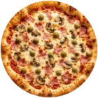
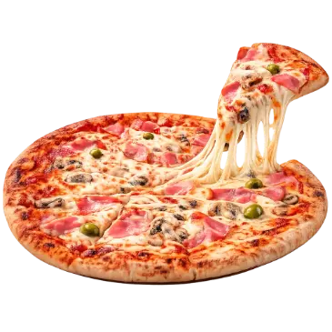

Adice, Novi Sad - od 2016.
Svaka pica ima svoj početak.
Ovo je naš. Skroluj polako.

Od testa do priloga


01 / 04 - Testo

Pre pećnice
Složi svoju Capricciosu.
Dodaj sastojke redom.

06 - Dostava
Pica stiže do tebe.
 Foka
Foka
 Tvoja vrata
~25 min
Tvoja vrata
~25 min

Meni
Šta se peče kod nas.
pizza 24 / 32 / 50 cm · cene u dinarima
Pizze
Dodaci jaje +60, šunka +200, kulen +200, pečenica +200, slanina +200, masline +100, sir +220, šampinjoni +90, pavlaka +60, majonez +60, rukola +80/+120, povrće +100, ljute paprike +10
Sendviči
u domaćoj lepinji
Sendvič šunka450
Sendvič kulen500
Sendvič pečenica500
Foka sendvič520
Tunjevina sendvič520
Indeks sendvič500
Sudžuk sendvič610
Sa pilećom šunkom590
Hemendeks u lepinji
šunka, jaje, salata, paradajz, krastavci
Bekendeks u lepinji
slanina, jaje, salata, paradajz, krastavci
Dimljena kobasica u ćabati
pavlaka, senf, salata, paradajz, krastavac, luk
Premazi pavlaka, majonez, tzatziki, urnebes, aurora, rukola
Palačinke
Slane
Šunka400
Kulen420
Pečenica420
Foka460
Slatke
Nutela350
Eurokrem300
Marmelada290
Krem300
Krem beli290
Krem - keks300
Foka palačinka
nutela, višnja, keks, šlag
Med300
Šećer i orasi300
Po želji / prazna150
Dodaci banana, ananas, šumsko voće, višnja, kokos, orasi, lešnik, med, šlag, plazma, keks — od +40
Salate
Salata Foka
pečenica, slanina, krutoni, zelena salata, parmezan
Salata Tunjevina
tunjevina, krutoni, zelena salata, masline, luk
Piće
Cola / Zero / Fanta / Sprite 0.5250
Cola limenka 0.33250
Schweppes bitter250
Nes tea / Next sok 0.5260
Ultra energy 0.25260
Rosa / Knjaz Miloš voda 0.5230
Heineken 0.4300
Birra Moretti 0.4250
Somersby 0.33290
Espresso190
Espresso sa mlekom210
Espresso sa šlagom220
Limunada270
Kafa za poneti / Domaća kafa180
Dođite u Foku
Naručite, stižemo.
Picerija i palačinkarnica Foka radi od januara 2016. Dostava na području Novog Sada, svakog dana.
Naruči - 064 / 30 63 907Adresa
Branka Ćopića 33a, Novi SadRadno vreme
Svaki dan · 08-23hTelefon
064 / 30 63 907Dostava
Područje Novog Sada · 08–23h